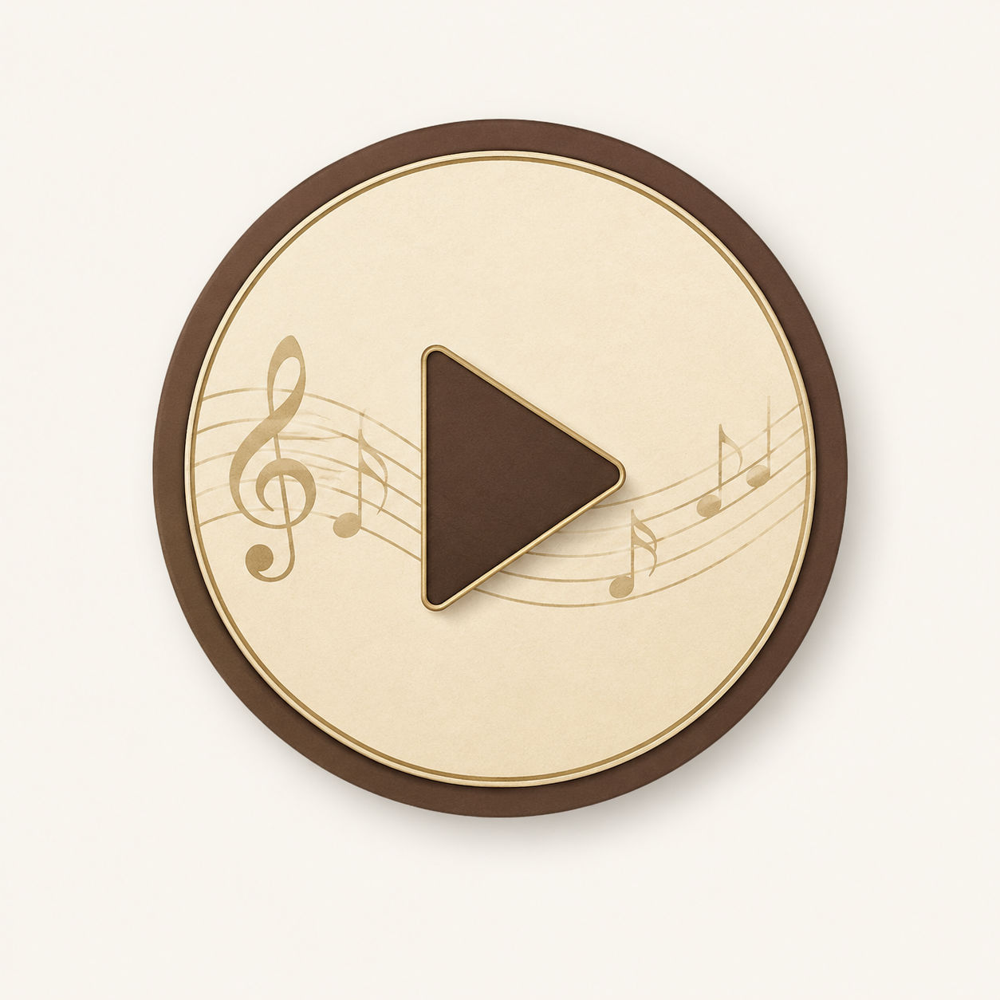

Schon direkt zu Beginn gab es ein großes Problem: Abgesehen von den im Quintezirkel beschriebenen Harmonien und der Sonatenhauptsatzform hab ich leider nicht so viel Wissen über Kompositionsprinzipien der Wiener Klassik. Das reicht leider nicht aus, um eine vollständige Sonatine zu komponieren, weshalb ich beschlossen hab, mir eine Sonatine von Mozart anzuschauen und mal zu schauen, was ich alles rauslesen kann.
Nach kurzer Recherche habe ich die Klavier Sonate Nummer 16 als eine der berühmtesten Sonatinen von Mozart gefunden. Mit den beschränkten Analysekriterien die ich habe sind mir doch schon nach ein paar mal hören (und schauen) direkt ein paar Dinge ins Auge gesprungen, die ich so auch direkt für meine Melodie umsetzen kann:

Diese Triller können auch komplizierter werden, als nur zwei Noten häufig und schnell gespielt. So wandert Mozart in diesem Beispiel mit dem unteren Ton immer weiter nach unten:| Stylmittel | Umsetzung |
|---|---|
| Einfacher Triller | Ein einfacher Triller bestehend aus H und C: |
| Abwechselnder Triller | Als ich überlegt habe, wie ich den sinkenden Mozart Triller abwandeln könnte, bin ich schnell darauf gekommen, dass ich statt einer Tendenz (sinkend) einfach ein abwechselnde untere Note (C und A, D bildet die obere Note) einbaue: |
| Tonleiterlauf (ich kenne den Fachbegriff dafür leider nicht) | Mozart hat diese Läufe teilweise sehr komplex gestaltet. Ich bin stattdessen einfach nur die G-dur Tonleiter runtergelaufen, und bin an einer Stelle aber dafür deutlich zurückgesprungen: |
| Bass | Hier habe ich Mozarts Basstöne (C-E-G und D-F-G) übernommen, jedoch hab ich den Alberti Bass etwas einfacher gespielt. Statt ___ habe ich nur ___ gespielt |